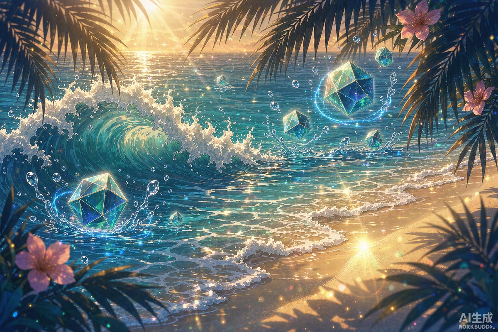

核心结论：砂金·戏波之夏是 4.5 版本下半期上线的五星愉悦命途量子属性角色，核心机制为「热情」叠加触发额外愉悦技能，以沙滩排球和冲浪为攻击方式，兼具群体与单体输出能力。0命可玩，依赖队伍高频行动最大化伤害。
一、角色定位与机制简述
砂金·戏波之夏属于愉悦命途输出型角色，战技与终结技围绕「热情」与「爆笑梗」层数展开。自身施放技能或队友行动时积累热情，达到阈值后立即额外施放一次愉悦技能，对敌方全体造成伤害并对随机单体造成多次伤害。后续的「哈哈时刻」将进一步强化愉悦技能，我方行动次数越多，伤害越高。
配队时需要考虑：
- 提供高频行动或多段攻击的队友，加速热情积累
- 增伤/减防辅助位放大砂金输出
- 生存位保证砂金在输出循环中不被打断
关键机制：砂金的额外愉悦技能触发频率与队伍行动次数直接相关。搭配高频行动角色（追击队、多段攻击队）可最大化热情积累和哈哈时刻强化层数。
二、抽取建议
| 命座 | 提升幅度 | 建议 |
|---|---|---|
| 0命 | 完整机制 | 可玩，热情→愉悦技能循环完整 |
| 1命 | 热情获取效率提升 | 性价比不错，加速额外技能触发 |
| 2命 | 哈哈时刻伤害强化 | 氪金玩家可考虑，伤害提升明显 |
| 专武 | 大幅增伤+机制联动 | 有预算优先抽取，否则可用四星替代 |
平民建议：0命 + 四星光锥即可应对大部分深渊内容。砂金作为输出角色，辅助配队比命座更重要。如果已有千冶刃或黄泉等主力输出，可酌情跳过。
三、配队推荐
追击高频队（推荐）
砂金·戏波之夏 + 知更鸟·夏空之歌 + 停云 + 符玄
- 知更鸟增伤+拉条，加速砂金热情积累
- 停云充能与攻击增益，加速砂金循环
- 符玄保证生存，适合高难深渊
- 全队高频行动最大化砂金额外愉悦技能触发
量子通用队
砂金·戏波之夏 + 黄泉 + 佩拉 + 加拉赫
- 黄泉终结技与砂金愉悦技能形成交替爆发
- 佩拉减防减抗，提升砂金整体输出
- 加拉赫提供治疗与击破辅助
多段攻击队
砂金·戏波之夏 + 飞霄 + 花火 + 藿藿
- 飞霄巡猎高频行动加速砂金热情积累
- 花火拉条+增伤，双重加速
- 藿藿充能保证砂金终结技频率
低配过渡队
砂金·戏波之夏 + 停云 + 娜塔莎 + 青雀（或任意输出）— 适合 BOX 较浅的玩家。
四、遗器搭配
推荐套装
- 首选：逐星猎人 4 件套 — 追击伤害与暴击率加成，与砂金愉悦技能高度契合
- 备选：繁星璀璨的天才 4 件套 — 泛用暴击套
- 2+2：逐星猎人 2 + 繁星璀璨的天才 2 — 散件过渡
主词条
| 部位 | 推荐主词条 |
|---|---|
| 躯干 | 暴击率 / 暴击伤害 |
| 脚部 | 速度 / 攻击力% |
| 位面球 | 量子伤害 / 攻击力% |
| 连接绳 | 攻击力% / 击破特攻 |
副词条优先级：暴击率 > 暴击伤害 > 攻击力% > 速度 > 击破特攻
暴击目标：砂金作为输出角色，建议暴击率 70%+、暴击伤害 120%+。愉悦技能多段攻击吃暴击收益极高。
五、光锥选择
| 优先级 | 光锥 | 说明 |
|---|---|---|
| S | 浪花起舞之夏（专武） | 最佳搭配，增伤与热情机制联动 |
| A | 度假时光（四星） | 4.5版本新四星愉悦光锥，性价比高 |
| A | 到不了的彼岸 | 高暴击与终结技增伤 |
| B | 在蓝天下 | 四星过渡，暴击率稳定 |
六、行迹与材料速刷
- 愉悅行迹材料 — 侵蚀隧洞对应副本（周二/周五/周日）
- 角色突破材料 — 4.5 版本千星城新地图掉落
- 信用点与经验书 — 拟造花萼「金」系列，双倍活动期集中刷取
体力分配：先 80 级突破 → 点满战技/终结技/天赋 → 再投入遗器本。砂金下半期（9.16）才上线，可提前在上半期攒材料。
七、适用环境评价
| 模式 | 评价 | 说明 |
|---|---|---|
| 忘却之庭 | T1~T0 | 追击队中表现T0，通用队T1 |
| 虚构叙事 | T0 | 群体愉悦技能+多段攻击，清场能力强 |
| 末日幻影 | T1 | 视配队和弱点而定 |
| 差分宇宙 | T1 | 输出型角色在肉鸽模式泛用性中等 |
八、总结
砂金·戏波之夏是 4.5 版本下半期的愉悦命途输出角色，热情→额外愉悦技能机制与高频队伍完美搭配。0命即有完整输出循环，但需要搭配合适的辅助才能发挥最大潜力。如果上半已抽知更鸟·夏空之歌，下半砂金与之组队效果极佳。资源有限建议 0+0，预算充足可追专武。已有千冶刃等追击主C的玩家可酌情考虑。